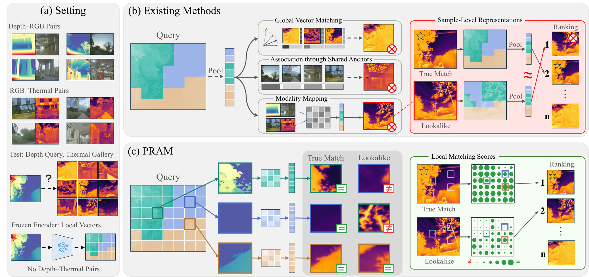
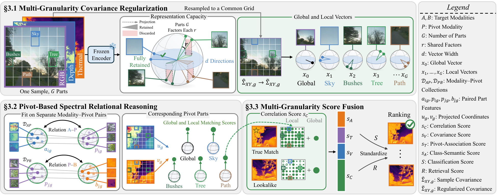
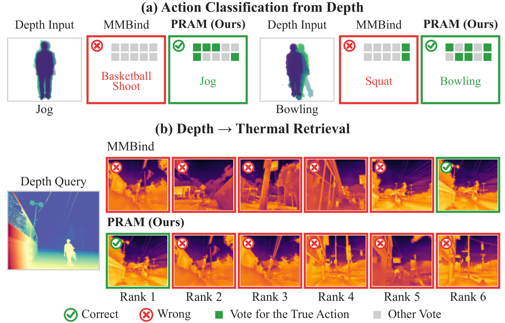
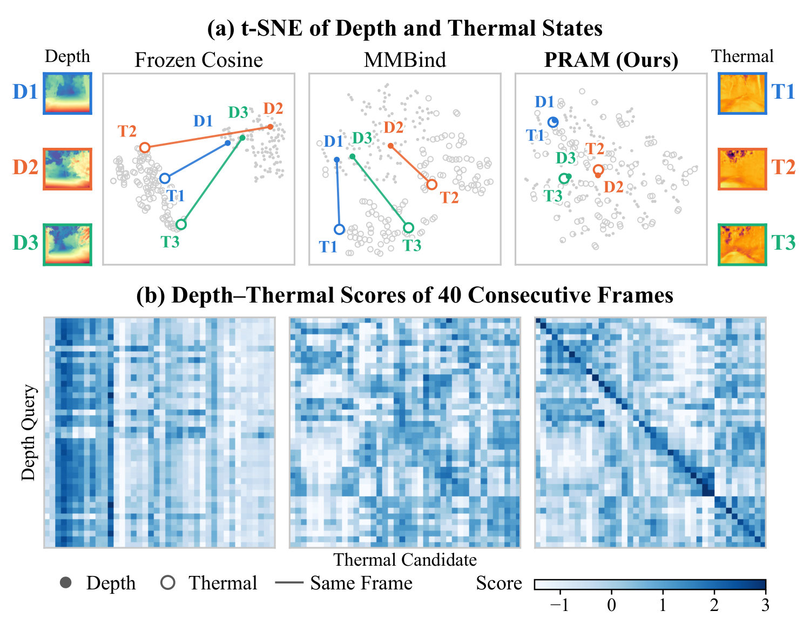
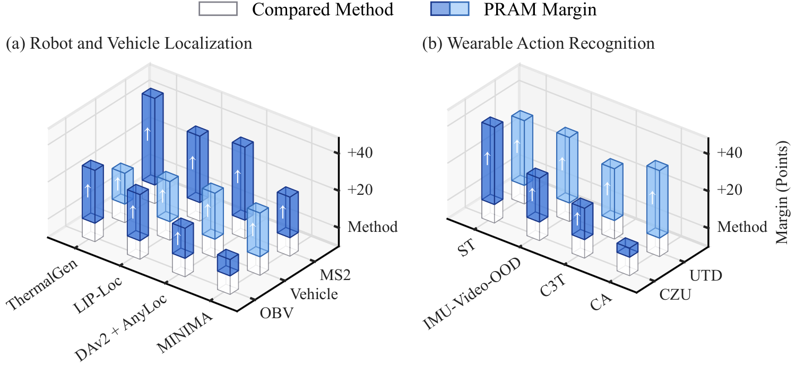
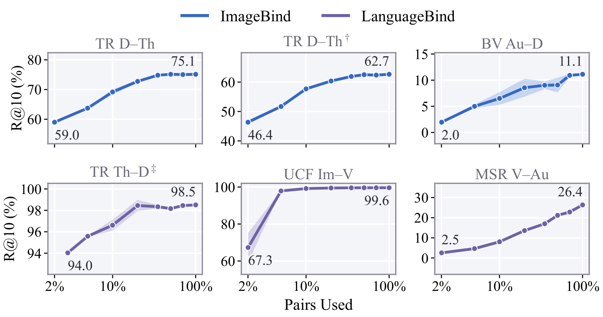
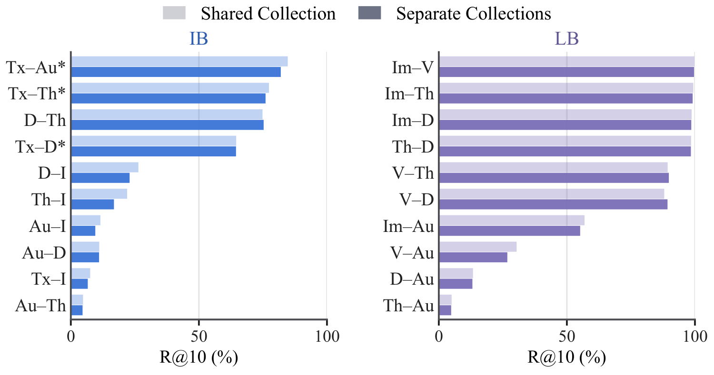
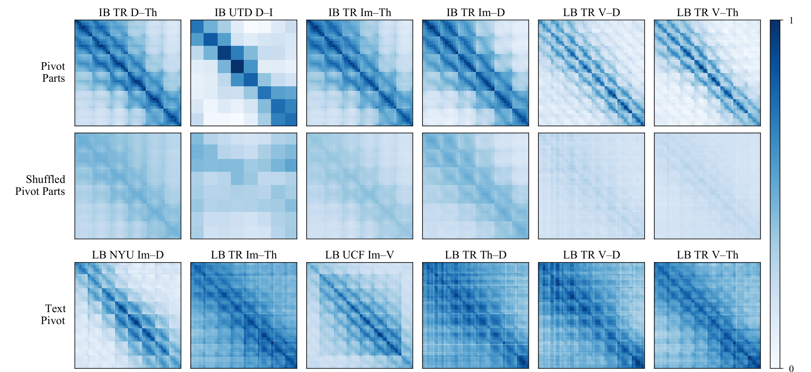

PRAM: Activating Latent Multimodal Knowledge through Partwise ReasoningPRAM：通过局部统计推理激活冻结多模态编码器的潜在知识
PRAM: Activating Latent Multimodal Knowledge through Partwise Reasoning
1North China University of Technology · 2Nanjing University of Science and Technology · 3Sichuan University · 4Central South University · 5Sun Yat-sen University · 6National University of Singapore, NExT++ Research Centre
1北方工业大学 · 2南京理工大学 · 3四川大学 · 4中南大学 · 5中山大学 · 6新加坡国立大学 NExT++ 研究中心
†Corresponding author: Fei Shen (shenfei29@nus.edu.sg)†通讯作者：Fei Shen（shenfei29@nus.edu.sg）
Abstract.摘要。
Emergent cross-modal classification and retrieval enable transfer between modalities without direct paired supervision. However, existing methods often prioritize sample-level alignment, overlooking local discriminative information and partwise statistical relations. To this end, we propose partwise reasoning across modalities (PRAM), which activates latent multimodal knowledge in frozen encoders by composing partwise statistical relations through a shared pivot modality. Specifically, we first present a multi-granularity covariance regularization (MCR) module that estimates covariances from global and local vectors in two collections of modality–pivot pairs, stabilizing local estimates through adaptive blending with their cross-part means. Second, we devise a pivot-based spectral relational reasoning (PSRR) module that infers global and partwise statistical relations between target modalities through regularized covariance composition and extracts paired projection directions and their correlation strengths via whitening and spectral decomposition. Finally, we introduce a multi-granularity score fusion (MSF) module that standardizes and fuses matching scores from global and local relations, incorporating task-specific information on pivot associations and class semantics for class prediction and candidate ranking. Extensive experiments across ten datasets demonstrate that PRAM achieves state-of-the-art performance in 16 of 17 classification settings and 19 of 20 retrieval settings, while exhibiting strong performance across three real-world sensing scenarios.
涌现式跨模态分类与检索能够在缺乏目标模态间直接配对监督的条件下实现跨模态迁移。然而，现有方法大多聚焦于样本级全局对齐，忽视了编码器内部已有的局部鉴别信息与局部统计关系。为此，我们提出跨模态局部推理（PRAM），在保持编码器完全冻结的前提下，通过共享枢轴模态组合局部统计关系，激活冻结多模态编码器中的潜在知识。具体而言，我们首先设计多粒度协方差正则化（MCR）模块，基于两组独立的模态—枢轴配对集合同时提取全局与局部向量，并通过与跨局部均值的自适应收缩融合稳定局部协方差估计；其次，提出基于枢轴的谱关系推理（PSRR）模块，通过正则化协方差组合在全局与对应局部两个层面推断目标模态间的统计关系，并经白化与谱分解提取成对投影方向及相关强度；最后，构建多粒度分数融合（MSF）模块，对全局与局部匹配分数进行对称参考库标准化并自适应融合，同时在分类任务中引入枢轴关联与类别语义分数。在 10 个基准数据集上的大量实验表明，PRAM 在 17 个分类设定中的 16 个 和 20 个检索设定中的 19 个 取得最优表现，并在三类真实感知场景中展现出显著优势。
- 16 / 17Classification settings led分类设定排第一+9.7 IB / +2.0 LB mean Top-1IB 均值 +9.7 / LB 均值 +2.0
- 19 / 20Retrieval settings led检索设定排第一IB TR D–Th: 75.1 vs. 17.5 R@10IB TR 深度—热成像 75.1 vs. 17.5
- 3 / 3Real-world sensing scenarios led真实感知场景全部领先MS2 55.3% · Vehicle 26.2% · IMU 80.6% / 90.8%MS2 55.3% · 跨车定位 26.2% · 穿戴 IMU 80.6% / 90.8%
- 0Direct target pairs or encoder updates目标模态配对与编码器微调Frozen encoders · 1–175 s statistical fit全冻结编码器 · 1–175 秒统计拟合

1 · Why Global Embeddings Leave Multimodal Knowledge Unused为什么全局表征会掩盖潜在跨模态知识？
Pretrained binding models such as ImageBind and LanguageBind align each modality into a shared embedding space using paired collections linked to a common pivot modality (such as RGB images or text), enabling emergent classification and retrieval between target modalities $A$ and $B$ that were never paired during training. Yet existing alignment, anchor-association, and mapping approaches compress every sample into a single global embedding before estimating cross-modal relations.
When a sample contains distinct spatial regions or temporal segments, collapsing those parts into one width-$d$ global vector discards fine-grained relational cues that the frozen encoder already computes internally. Under an idealized linear–Gaussian block model with $G$ independent parts, each carrying $r$ shared factors, a width-$d$ global representation and one width-$d$ local vector per part retain the following fractions of content and composed cross-modal covariance energy:
Whenever $r \le d < Gr$, a single global vector retains only $d/(Gr)$ of the underlying cross-modal relation, whereas partwise vectors preserve every part in full. Activating this latent knowledge without modifying the frozen encoders therefore requires keeping local vectors intact throughout relation estimation and scoring.
ImageBind 和 LanguageBind 等预训练多模态绑定模型通过共享枢轴模态（如 RGB 图像或文本）将多种模态映射到统一语义空间，从而在从未成对出现过的目标模态 $A$ 与 $B$ 之间涌现出跨模态分类与检索能力。然而，现有样本级对齐、锚点关联和空间映射方法在估计跨模态关系之前，都将每个样本压缩为单一的全局向量。
当样本包含丰富的空间区域或时间片段时，将局部特征折叠为单个维度为 $d$ 的全局向量，会丢弃冻结编码器内部已经提取出的细粒度对应线索。在包含 $G$ 个独立局部（每个局部含 $r$ 个共享潜因子）的线性高斯块模型下，单个 $d$ 维全局向量与每块一个 $d$ 维局部向量所保留的内容与组合跨模态协方差能量比例分别为：
当 $r \le d < Gr$ 时，全局向量仅能保留 $d/(Gr)$ 的跨模态关系，而局部向量能够完整保留每个局部的统计结构。因此，在不微调冻结编码器的前提下激活这些潜在知识，关键在于在关系估计与匹配打分的全流程中保留局部结构。
2 · PRAM: Partwise Reasoning across ModalitiesPRAM：跨模态局部统计推理框架

Given two separately provided modality–pivot fitting collections $\mathcal{D}_{AP} = \{(a_i, p_i)\}_{i=1}^{n_A}$ and $\mathcal{D}_{PB} = \{(p_j, b_j)\}_{j=1}^{n_B}$ with frozen encoders and zero direct $A$–$B$ pairs, PRAM activates latent cross-modal relations through three closed-form statistical modules:
给定两组独立的模态—枢轴拟合集合 $\mathcal{D}_{AP} = \{(a_i, p_i)\}_{i=1}^{n_A}$ 与 $\mathcal{D}_{PB} = \{(p_j, b_j)\}_{j=1}^{n_B}$，在编码器完全冻结且无任何 $A$–$B$ 直接配对样本的条件下，PRAM 通过三个闭式统计模块完成关系激活与打分：
Multi-Granularity Covariance Regularization (MCR)多粒度协方差正则化（MCR）
MCR retains the official global embedding $x_0$ together with frozen spatial or temporal local vectors $x_1, \ldots, x_G$ (broadcasting single-vector modalities across parts). To stabilize covariance estimation under limited modality–pivot pairs, MCR adaptively shrinks each local sample covariance block $\widehat{\Sigma}_{XY,g}$ toward its cross-part mean on the same edge:
where the shrinkage intensity $\alpha \in [0, 1]$ is estimated analytically from the pooled variance-to-dispersion ratio across both edges (and $\alpha = 0$ for the global component).
MCR 同时保留编码器输出的全局向量 $x_0$ 与空间/时间局部向量 $x_1, \ldots, x_G$（单向量模态广播至各局部）。为防止有限配对数据下局部协方差估计不稳，MCR 将每块的经验协方差 $\widehat{\Sigma}_{XY,g}$ 与同边跨局部均值自适应收缩融合：
其中收缩强度 $\alpha \in [0, 1]$ 由两侧边的块方差与跨局部离散度之比解析估计（全局分量取 $\alpha = 0$）。
Pivot-Based Spectral Relational Reasoning (PSRR)基于枢轴的谱关系推理（PSRR）
For every component $g \in \{0, 1, \ldots, G\}$, PSRR averages the shrunk pivot covariances across both edges $H_g = \tfrac{1}{2}(\widetilde{\Sigma}_{PP,g}^{(AP)} + \widetilde{\Sigma}_{PP,g}^{(PB)})$, composes the regularized cross-covariance $K_g = \widetilde{\Sigma}_{AP,g}(H_g + \rho_{P,g}I)^{-1}\widetilde{\Sigma}_{PB,g}$, whitens both endpoints via $W_{X,g} = (\widetilde{\Sigma}_{XX,g} + \rho_{X,g}I)^{-1/2}$ ($\lambda = 0.5$), and computes the SVD $W_{A,g}K_g W_{B,g} = U_g \operatorname{diag}(\sigma_g) V_g^\top$. Equal-edge pivot averaging provably guarantees every singular value satisfies $\sigma_{gk} \le 1$. Retaining the leading $k_g \le 256$ directions gives whitened coordinates $u_g, v_g$ and the composite Gaussian log-likelihood ratio matching score:
对每个分量 $g \in \{0, 1, \ldots, G\}$，PSRR 对两侧收缩枢轴协方差取等权均值 $H_g = \tfrac{1}{2}(\widetilde{\Sigma}_{PP,g}^{(AP)} + \widetilde{\Sigma}_{PP,g}^{(PB)})$，构造正则化组合互协方差 $K_g = \widetilde{\Sigma}_{AP,g}(H_g + \rho_{P,g}I)^{-1}\widetilde{\Sigma}_{PB,g}$，对两端点白化 $W_{X,g} = (\widetilde{\Sigma}_{XX,g} + \rho_{X,g}I)^{-1/2}$（相对岭系数 $\lambda = 0.5$），并作奇异值分解 $W_{A,g}K_g W_{B,g} = U_g \operatorname{diag}(\sigma_g) V_g^\top$。理论证明等权枢轴平均保证所有奇异值恒满足 $\sigma_{gk} \le 1$。保留前 $k_g \le 256$ 个主方向得到白化坐标 $u_g, v_g$ 及复合对数似然比匹配分数：
Multi-Granularity Score Fusion (MSF)多粒度分数融合（MSF）
MSF aggregates global and local correlation scores $s_C = \ell_0 + \omega\sum_{g=1}^G \ell_g$ alongside unshrunk covariance-weighted pivot-map cosine scores $s_V$, and applies symmetric reference-bank standardization $\mathcal{Z}_s(a, b)$ using up to $2{,}000$ fixed training samples per edge to suppress hubness without touching test statistics. When pivot states repeat across edges or class prompts repeat on $A$, MSF automatically activates cross-fitted discriminant pivot-association ($s_T$) and class-semantic ($s_A$) scores gated by the empirical repeat index $w$, shared-state coverage $o$, and held-out reliability $\tau_A$:
MSF 聚合全局与局部相关分数 $s_C = \ell_0 + \omega\sum_{g=1}^G \ell_g$ 以及未收缩协方差映射的余弦分数 $s_V$，并利用每侧最多 $2{,}000$ 条固定训练参考样本执行对称参考库标准化 $\mathcal{Z}_s(a, b)$，在不依赖测试集分布的前提下有效抑制 hubness。当枢轴状态在两侧重复或类别提示重复出现时，MSF 根据经验重复指数 $w$、共享状态覆盖率 $o$ 与留出可靠性 $\tau_A$ 自动激活交叉拟合判别式枢轴关联分数（$s_T$）与类别语义分数（$s_A$）：
3 · Main Benchmark Results主基准实验结果
We evaluate PRAM across 17 cross-modal classification and 20 cross-modal retrieval settings spanning ten datasets on frozen ImageBind and LanguageBind encoders, comparing against 15 sample-level baselines trained strictly on modality–pivot pairs. PRAM ranks first in 16 of 17 classification settings (+9.7 points mean Top-1 on ImageBind and +2.0 on LanguageBind over the strongest baseline) and 19 of 20 retrieval settings (+11.3 points mean R@10 on ImageBind and +10.4 on LanguageBind), and ranks first on all 5 random seeds across all four backbone-task means (50.7 ± 0.5, 79.8 ± 0.4, 32.5 ± 0.3, 53.6 ± 0.5). Use the tabs below to inspect the classification, retrieval, and ablation benchmarks.
我们在冻结的 ImageBind 与 LanguageBind 编码器上覆盖 10 个数据集，全面评测了 17 个跨模态分类设定 与 20 个跨模态检索设定，并与 15 个严格仅使用模态—枢轴配对数据的样本级基线进行对比。PRAM 在 16/17 分类设定（ImageBind 平均 Top-1 高出最强基线 +9.7，LanguageBind 高出 +2.0）与 19/20 检索设定（ImageBind 平均 R@10 高出 +11.3，LanguageBind 高出 +10.4）上取得第一，且在 5 个随机种子下全部四项骨干—任务均值实现 5/5 全胜（50.7 ± 0.5、79.8 ± 0.4、32.5 ± 0.3、53.6 ± 0.5）。点击下方标签页可切换查看分类、检索与消融完整对比表。
4 · Qualitative Evidence & Internal States定性对比与内部表征结构
Beyond aggregate metrics, qualitative retrieval cases and internal state visualizations confirm that PRAM separates fine-grained instances where sample-level embeddings collapse. On UTD-MHAD depth-to-IMU action classification, 5 and 6 of PRAM's ten nearest neighbors vote for the true action (jog and bowling), compared with 0 and 2 for MMBind. On ImageBind TartanRGBT depth–thermal retrieval, MMBind places five visually similar street frames ahead of the true match, whereas PRAM ranks the true match first. Across 40 consecutive test frames along a single trajectory, PRAM's standardized similarity matrix exhibits a sharp true-pair diagonal, ranking the exact same-frame thermal image first in 35 of 40 queries versus 6 for MMBind and 2 for Frozen Cosine.
除整体指标外，定性检索样例与内部状态可视化进一步印证了 PRAM 在细粒度区分上的优势。在 UTD-MHAD 深度—IMU 动作分类中，PRAM 的 10 近邻分别有 5 个和 6 个命中真实类别（jog 与 bowling），而 MMBind 仅为 0 个和 2 个。在 ImageBind TartanRGBT 深度—热成像检索中，MMBind 将 5 帧相似街景排在真实目标之前，而 PRAM 将真实匹配排在首位。在连续 40 帧轨迹热图中，PRAM 呈现出清晰的对角线响应，在 35/40 行将同帧热成像排到第一（MMBind 仅 6/40，Frozen Cosine 仅 2/40）。


5 · Real-World Sensing Scenarios三类真实感知场景验证
Using task-specific frozen encoders (AnyThermal, DINOv2-B, ResNet18, AnyMo) without fine-tuning, PRAM transfers directly to three real-world sensing scenarios and leads every single reported metric (16/16) across localization and wearable action recognition:
- Robot Localization (MS2 & OBV)Thermal-to-depth retrieval bridged through RGB pivots achieves 55.3% success within 5 m on MS2 (vs. MINIMA 33.4%) and 31.9% within 0.25 m on OBV (vs. MINIMA 23.1%), with exact-frame R@10 reaching 51.9% and 35.9%.
- Cross-Device Vehicle Localization (ViViD++ → MS2)Fitting on daytime ViViD++ RGB–thermal pairs and MS2 depth–RGB pairs across different vehicles and sensors, PRAM localizes nighttime ViViD++ thermal queries against MS2 depth maps at 26.2% within 5 m (vs. ThermalGen 9.6%) and 15.0% on a completely separate traversal (vs. ASIF 8.3%).
- Wearable Action Recognition (UTD-MHAD & CZU-MHAD)Linking labeled videos to IMU signals through unlabeled video–IMU pairs and evaluating strictly on IMU inputs alone, PRAM reaches 80.6% Top-1 on UTD (vs. C3T 52.7%) and 90.8% Top-1 on CZU (vs. CA 85.9%).
将同一套统计构造直接迁移至任务专用冻结编码器（AnyThermal、DINOv2-B、ResNet18、AnyMo）且不做微调，PRAM 在三类真实感知场景的全部 16/16 项指标上均排名第一：
- 机器人跨模态定位（MS2 与 OBV）经 RGB 枢轴实现热成像到深度检索，在 MS2（5 m 内）达到 55.3%（MINIMA 为 33.4%），在 OBV（0.25 m 内）达到 31.9%（MINIMA 为 23.1%），精确帧双向 R@10 分别达到 51.9% 与 35.9%。
- 跨设备夜间车辆定位（ViViD++ → MS2）跨车辆与跨传感器在日间 ViViD++ RGB—热成像与 MS2 深度—RGB 边上拟合关系，对夜间热成像查询在 MS2 深度地图上实现 26.2%（5 m 内，ThermalGen 为 9.6%），在完全独立轨迹上仍达到 15.0%（ASIF 为 8.3%）。
- 仅 IMU 可穿戴动作识别（UTD-MHAD 与 CZU-MHAD）通过无标注视频—IMU 对将带标签视频迁移至穿戴惯性传感器，测试阶段仅输入 IMU 信号，在 UTD 上达到 80.6% Top-1（C3T 为 52.7%），在 CZU 上达到 90.8% Top-1（CA 为 85.9%）。

6 · Mechanism Analysis: Why Partwise Composition Works机理分析：局部组合为何有效？
Five controlled analyses isolate the mechanisms behind PRAM's gains:
- Spatial GranularityKeeping frozen ImageBind layers fixed on TartanRGBT, partitioning from 1 to 42 parts boosts R@10 from 21.7 to 75.1 (R@1 from 3.9 to 46.8) at 3.62 GB peak memory (9.4 s fit).
- Equal Direction BudgetEven when total retained projection directions across all parts are strictly capped at 256 (identical to a single merged vector), partwise representations still beat merged representations by +9.4 to +45.6 points across all five settings; giving each part its own 256-direction budget yields an additional +14.9 to +18.1 points at 42 parts.
- Pivot Part CorrespondenceShuffling pivot parts within each sample destroys part correspondence and drops IB TR R@10 from 75.1 to 23.5 (−51.6). Part-pairing heat maps confirm that 59–100% of parts automatically pair most strongly with their exact corresponding counterpart across all tested configurations.
- Data Efficiency & Cross-Part ShrinkageWith just 2% of modality–pivot pairs, PRAM already reaches 59.0 R@10 on IB TR (exceeding the best full-data sample-level baseline's 17.5) and 46.4 on unseen trajectories; removing MCR's cross-part shrinkage ($\alpha = 0$) causes severe collapse (59.0 → 21.7, 94.0 → 41.6 on LB TR RGB-pivot).
- Separate Fitting CollectionsAcross 20 configurations and 10 random splits, fitting the two edges on completely disjoint collections retains 96.6% of the mean gain over Frozen Cosine (−1.0 point on average).
五组受控机理实验清晰定位了 PRAM 的增益来源：
- 空间粒度在固定冻结特征层下，将 TartanRGBT 从 1 块细分为 42 块即可使 R@10 从 21.7 跃升至 75.1（R@1 从 3.9 升至 46.8），峰值显存仅 3.62 GB（拟合耗时 9.4 s）。
- 等投影方向预算控制即使将全部分块的总投影方向数严格锁死为与单块相同的 256，局部建模仍在全部 5 组设定上高出合并全局 +9.4 至 +45.6 点；放开至每块 256 维后，42 块还可再涨 +14.9 至 +18.1 点。
- 枢轴局部对应关系仅在样本内部打乱枢轴块序而不改变向量集合，IB TR 的 R@10 即从 75.1 骤降至 23.5（−51.6）。跨模态局部配对热图证实，59%–100% 的局部最强配对对象正是另一模态的精确对应位置。
- 配对数据效率与跨局部收缩仅用 2% 的模态—枢轴对，PRAM 在 IB TR 上即达到 59.0 R@10（远超全量数据下最强样本级基线的 17.5），未见轨迹亦达 46.4；移除 MCR 跨局部收缩（$\alpha = 0$）则导致性能大幅塌缩（59.0 → 21.7，LB TR RGB 枢轴 94.0 → 41.6）。
- 分离拟合集合在 20 组设定、10 次随机划分下，两侧边采用完全不相交的训练集合仍能保留相对 Frozen Cosine 平均增益的 96.6%（均值仅差 1.0 点）。



7 · Citation引用格式
@article{chen2026pram,
title={PRAM: Activating Latent Multimodal Knowledge through Partwise Reasoning},
author={Chen, Haidong and Guo, Ying and Li, Shangze and Mao, Zhongkuan and Xu, Linrui and Xiao, Canran and Shen, Fei and Chua, Tat-Seng},
journal={arXiv preprint},
year={2026},
url={https://luo1yan.github.io/PRAM/}
}Use your device’s Copy command to copy the selected citation.请使用设备的复制命令复制已选中的引用内容。